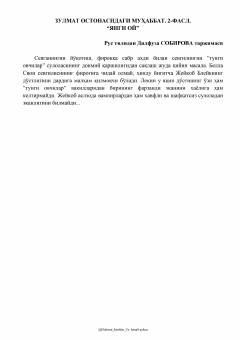

ZOBella va Edvardning sinovlarga boy fantastik sevgi qissasining ikkinchi qismi.
Ushbu kitob mashhur fantastik ishqiy roman turkumining ikkinchi qismi bo'lib, Bella Svon va Edvard Kallen o'rtasidagi murakkab munosabatlar haqida hikoya qiladi. Bella o'n sakkiz yoshga to'lib, qarishdan hamda sevglisi Edvarddan uzoqlashishdan xavotirga tushadi. Voqealar rivojida Bella va uning yaqinlari yangi xavf-hatarlar hamda sirlarga duch kelishadi.